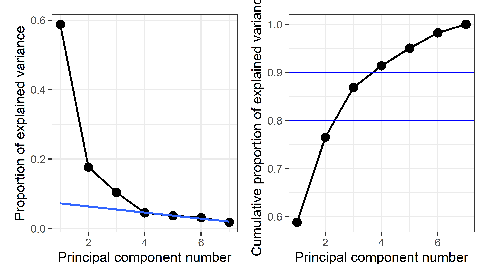
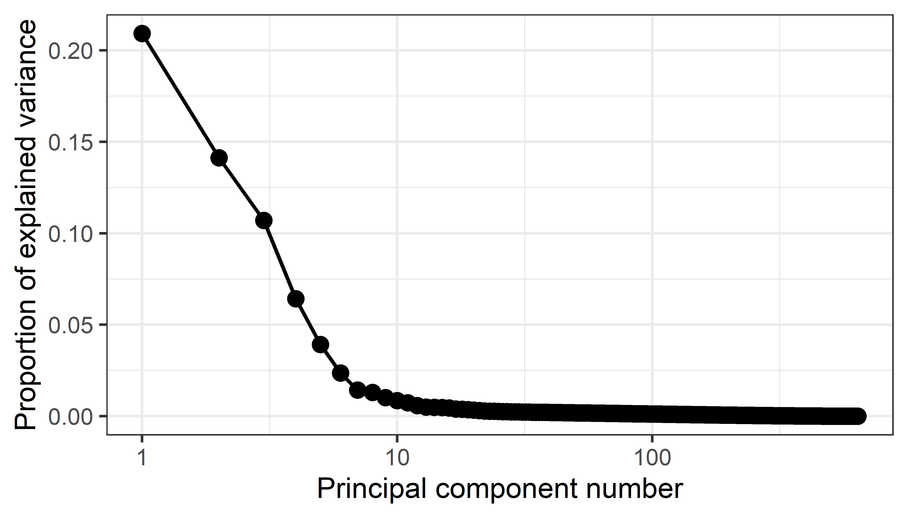

4 PCA and Biplots
4.1 Flatland and Spaceland
It is high time that I should pass from these brief and discursive notes about Flatland to the central event of this book, my initiation into the mysteries of Space. THAT is my subject; all that has gone before is merely preface — Edwin Abbott, Flatland, p. 57.
There was a cloud in the sky above Flatland one day. But it was a huge, multidimensional cloud of sparkly points that might contain some important message, perhaps like the hidden EUREKA (Figure 5), or perhaps forecasting the upcoming harvest, if only Flatlanders could appreciate it.
A leading citizen, A SQUARE, who had traveled once to Spaceland and therefore had an inkling of its majesty beyond the simple world of his life in the plane looked at that cloud and had a brilliant thought, an OMG moment:
“Oh, can I, in my imagination, rotate that cloud and squeeze its’ juice so that it rains down on Flatland with greatest joy?”
As it happened, our Square friend, although he could never really see in three dimensions, he could now at least think of a world described by height as well as breadth and width, and think of the shadow cast by a cloud as something mutable, changing size and shape depending on its’ orientation over Flatland.
And what a world it was, inhabited by Pryamids, Cubes and wondrous creatures called Polyhedrons with many \(C\)orners, \(F\)aces and \(E\)dges. Not only that, but all those Polyhedra were forced in Spaceland to obey a magic formula: \(C + F - E = 2\).1 How cool was that!
Indeed, there were even exalted Spheres, having so many faces that its surface became as smooth as a baby’s bottom with no need for pointed corners or edges, just as Circles were the smoothest occupants of his world with far too many sides to count. It was his dream of a Sphere passing through Flatland (Figure 1) that first awakened him to a third dimension.
He also marveled at Ellipsoids, as smooth as Spheres, but in Spaceland having three natural axes of different extent and capable of being appearing fatter or slimmer when rotated from different views. An Ellipsoid had magical properties: it could appear as so thin in one or more dimensions that it became a simple 2D ellipse, or a 1D line, or even a 0D point (Friendly et al., 2013).
All of these now arose in Square’s richer 3D imagination. And, all of this came from just one more dimension than his life in Flatland.
4.1.1 Multivariate juicers
Up to now, we have also been living in Flatland. We have been trying to understand data in data space of possibly many dimensions, but confined to the 2D plane of a graph window. Scatterplot matrices and parallel coordinate plots provided some relief. The former did so by projecting the data into sets of 2D views in the coordinates of data space; the latter did so by providing multiple axes in a 2D space along which we could trace the paths of individual observations.
This chapter is about seeing data in a different projection, a low-dimensional, usually 2D, space that which squeezes out the most juice from multidimensional data for a particular purpose (Figure 4.1), where what we want to understand can be more easily seen.
Here, I concentrate on principal components analysis (PCA), whose goal reflects A Square’s desire to see that sparkly cloud of points in \(nD\) space in the plane showing the greatest variation (squeezing the most juice) among all other possible views. This appealed to his sense of geometry, but left him wondering how the variables in that high-D cloud were related to the dimensions he could see in a best-fitting plane.
The idea of a biplot, showing the data points in the plane, together with thick pointed arrows—variable vectors— in one view is the other topic explained in this chapter (Section 4.3). The biplot is the simplest example of a multivariate juicer. The essential idea is to project the cloud of data points in \(n\) dimensions into the 2D space of principal components and simultaneously show how the original variables relate to this space. For exploratory analysis to get an initial, incisive view of a multivariate dataset, a biplot is often my first choice.
Looking ahead
I’m using the term multivariate juicer here to refer the wider class of dimension reduction techniques, used for various purposes in data analysis and visualization. Principal components analysis is the simplest example and illustrates the general ideas.
The key point is that these methods are designed to transform the data into a low-dimensional space for a particular goal or purpose. In PCA, the goal is to extract the greatest amount of total variability in the data. In the context of univariate multiple regression, the goal is often to reduce the number of predictors necessary to account for an outcome variable, called feature extraction in the machine learning literature.
When the goal is to best distinguish among groups discriminant analysis finds uncorrelated weighted sums of predictors on which the means of groups are most widely separated in a reduced space of hopefully fewer dimensions.
The methods I cover in this book are all linear methods, but there is also a wide variety of non-linear dimension reduction techniques …
Packages
In this chapter I use the following packages. Load them now:
4.2 Principal components analysis
When Francis Galton (1886) first discovered the idea of regression toward the mean and presented his famous diagram (Figure 3.9), he had little thought that he had provided a window to a higher-dimensional world, beyond what even A Square could imagine. His friend, Karl Pearson (1896) took that idea and developed it into a theory of regression and a measure of correlation that would bear his name, Pearson’s \(r\).
But then Pearson (1901) had a further inspiration, akin to that of A Square. If he also had a cloud of sparkly points in \(2, 3, 4, ..., p\) dimensions, could he find a point (\(0D\)), or line (\(1D\)), or plane (\(2D\)), or even a hyperplane (\(nD\)) that best summarized — squeezed out the most juice—from multivariate data? This was the first trully multivariate problem in the history of statistics (Friendly & Wainer, 2021, p. 186).
The best \(0D\) point was easy— it was simply the centroid, the means of each of the variables in the data, \((\bar{x}_1, \bar{x}_2, ..., \bar{x}_p)\), because that was “closest” to the data in the sense of minimizing the sum of squared differences, \(\Sigma_i\Sigma_j (x_{ij} - \bar{x}_j)^2\). In higher dimensions, his solution was also an application of the method of least squares, but he argued it geometrically and visually as shown in Figure 4.2.

For a \(1D\) summary, the line of best fit to the points \(P_1, P_2, \dots P_n\) is the line that goes through the centroid and made the average squared length of the perpendicular segments from those points to a line as small as possible. This was different from the case in linear regression, for fitting \(y\) from \(x\), where the average squared length of the vertical segments, \(\Sigma_i (y_i - \hat{y}_i)^2\) was minimized by least squares.
He went on to prove the visual insights from simple smoothing of Galton (1886) (shown in Figure 3.9) regarding the regression lines of y ~ x and x ~ y. More importantly, he proved that the cloud of points is captured, for the purpose of finding a best line, plane or hyperplane, by the ellipsoid that encloses it, as seen in his diagram, Figure 4.3. The major axis of the 2D ellipse is the line of best fit, along which the data points have the smallest average squared distance from the line. The axis at right angles to that—the minor axis— is labeled “line of worst fit” with the largest average squared distance.

Even more importantly— and this is the basis for what we call principal components analysis (PCA)— he recognized that the two orthogonal axes of the ellipse gave new coordinates for the data which were uncorrelated, whatever the correlation of \(x\) and \(y\).
Physically, the axes of the correlation type-ellipse are the directions of independent and uncorrelated variation. — Pearson (1901), p. 566.
It was but a small step to recognize that for two variables, \(x\) and \(y\):
- the line of best fit, the major axis (PC1) had the greatest variance of points projected onto it;
- the line of worst fit, the minor axis (PC2), had the least variance;
- these could be seen as a rotation of the data space of \((x, y)\) to a new space (PC1, PC2) with uncorrelated variables;
- the total variation of the points in data space, \(\text{Var}(x) + \text{Var}(y)\), being unchanged by rotation, was equally well expressed as the total variation \(\text{Var}(PC1) + \text{Var}(PC2)\) of the scores on what are now called the principal component axes.
It would have appealed to Pearson (and also to A Square) to see these observations demonstrated in a 3D video. Figure 4.4 shows a 3D plot of the variables Sepal.Length, Sepal.Width and Petal.Length in Edgar Anderson’s iris data, with points colored by species and the 95% data ellipsoid. This is rotated smoothly by interpolation until the first two principal axes, PC1 and PC2 are aligned with the horizontal and vertical dimensions. Because this is a rigid rotation of the cloud of points, the total variability is obviously unchanged.

iris data, initially in data space and its’ data ellipsoid, with points colored according #| to species of the iris flowers. This is rotated smoothly until the first two principal axes #| are aligned with the horizontal and vertical dimensions.4.2.1 PCA by springs
Before delving into the mathematics of PCA, it is useful to see how Pearson’s problem, and fitting by least squares generally, could be solved in a physical realization.
From elementary statistics, you may be familiar with a physical demonstration that the mean, \(\bar{x}\), of a sample is the value for which the sum of deviations, \(\Sigma_i (x_i - \bar{x})\) is zero, so the mean can be visualized as the point of balance on a line where those differences \((x_i - \bar{x})\) are placed. Equally well, there is a physical realization of the mean as the point along an axis where weights connected by springs will minimize the sum of squared differences, because springs with a constant stiffness, \(k\), exert forces proportional to \(k (x_i - \bar{x}) ^2\). That’s the reason is useful as a measure of central tendency: it minimizes the average squared error.
In two dimensions, imagine that we have points, \((x_i, y_i)\) and these are attached by springs of equal stiffness \(k\), to a line anchored at the centroid, \((\bar{x}, \bar{y})\) as shown in Figure 4.5. If we rotate the line to some initial position and release it, the springs will pull the line clockwise or counterclockwise and the line will bounce around until the forces, proportional to the squares of the lengths of the springs, will eventually balance out at the position (shown by the red fixed line segments at the ends). This is the position that minimizes the the sum of squared lengths of the connecting springs, and also minimizes the kinetic energy in the system.
If you look closely at Figure 4.5 you will see something else: When the line is at its’ final position of minimum squared length and energy, the positions of the red points on this line are spread out furthest, i.e., have maximum variance. Conversely, when the line line is at right angles to its’ final position (shown by the black line at 90\(^o\)) the projected points have the smallest possible variance.
TODO: Simple PCA example using workers data
4.2.2 Mathematics and geometry of PCA
As the ideas of principal components developed, there was a happy marriage of Galton’s geometrical intuition and Pearson’s mathematical analysis. The best men at the wedding were ellipses and higher-dimensional ellipsoids. The brides maids were eigenvectors, pointing in as many different directions as space would allow, each sized according to their associated eigenvalues. Attending the wedding were the ghosts of uncles, Leonhard Euler, Jean-Louis Lagrange, Augustin-Louis Cauchy and others who had earlier discovered the mathematical properties of ellipses and quadratic forms in relation to problems in physics.
The key idea in the statistical application was that, for a set of variables \(\mathbf{x}_1, \mathbf{x}_2, \dots, \mathbf{x}_p\), the \(p \times p\) covariance matrix \(\mathbf{S}\) could be expressed exactly as a matrix product involving a matrix \(\mathbf{V}\), whose columns are eigenvectors (\(\mathbf{v}_i\)) and a diagonal matrix \(\mathbf{\Lambda}\), whose diagonal elements (\(\lambda_i\)) are the corresponding eigenvalues.
To explain this, it is helpful to use a bit of matrix math:
\[\begin{align*} \mathbf{S}_{p \times p} & = \mathbf{V}_{p \times p} \quad\quad \mathbf{\Lambda}_{p \times p} \quad\quad \mathbf{V}_{p \times p}^T \\ & = \left( \mathbf{v}_1, \, \mathbf{v}_2, \,\dots, \, \mathbf{v}_p \right) \begin{pmatrix} \lambda_1 & & & \\ & \lambda_2 & & \\ & & \ddots & \\ & & & \lambda_p \end{pmatrix} \begin{pmatrix} \mathbf{v}_1^T\\ \mathbf{v}_2^T\\ \vdots\\ \mathbf{v}_p^T\\ \end{pmatrix} \\ & = \lambda_1 \mathbf{v}_1 \mathbf{v}_1^T + \lambda_2 \mathbf{v}_2 \mathbf{v}_2^T + \cdots + \lambda_p \mathbf{v}_p \mathbf{v}_p^T \end{align*}\]
In this equation,
The last line follows because \(\mathbf{\Lambda}\) is a diagonal matrix, so \(\mathbf{S}\) is expressed as a sum of outer products of each \(\mathbf{v}_i\) with itself.
The columns of \(\mathbf{V}\) are the eigenvectors of \(\mathbf{S}\). They are orthogonal and of unit length, so \(\mathbf{V}^T \mathbf{V} = \mathbf{I}\) and thus they represent orthogonal (uncorrelated) directions in data space.
The columns \(\mathbf{v}_i\) are the weights applied to the variables to produce the scores on the principal components. For example, the first principal component is the weighted sum:
\[ PC1 = v_{11} \mathbf{x}_1 + v_{12} \mathbf{x}_2 + \cdots + v_{1p} \mathbf{x}_p \]
The eigenvalues, \(\lambda_1, \lambda_2, \dots, \lambda_p\) are the variances of the the components, because \(\mathbf{v}_i^T \;\mathbf{S} \; \mathbf{v}_i = \lambda_i\).
It is usually the case that the variables \(\mathbf{x}_1, \mathbf{x}_2, \dots, \mathbf{x}_p\) are linearly independent, which means that none of these is an exact linear combination of the others. In this case, all eigenvalues \(\lambda_i\) are positive and the covariance matrix \(\mathbf{S}\) is said to have rank \(p\).
Here is the key fact: If the eigenvalues are arranged in order, so that \(\lambda_1 > \lambda_2 > \dots > \lambda_p\), then the first \(d\) components give a \(d\)-dimensional approximation to \(\mathbf{S}\), which accounts for \(\Sigma_i^d \lambda_i / \Sigma_i^p \lambda_i\) of the total variance.
For the case of two variables, \(\mathbf{x}_1\) and \(\mathbf{x}_2\) Figure 4.6 shows the transformation from data space to component space. The eigenvectors, \(\mathbf{v}_1, \mathbf{v}_2\) are the major and minor axes of the data ellipse, whose lengths are the square roots \(\sqrt{\lambda_1}, \sqrt{\lambda_2}\) of the eigenvalues.
4.2.3 Finding principal components
In R, principal components analysis is most easily carried out using stats::prcomp() or stats::princomp() or similar functions in other packages such as FactomineR::PCA(). The FactoMineR package (Husson et al., 2017, 2023) has extensive capabilities for exploratory analysis of multivariate data (PCA, correspondence analysis, cluster analysis).
A particular strength of FactoMineR for PCA is that it allows the inclusion of supplementary variables (which can be categorical or quantitative) and supplementary points for individuals. These are not used in the analysis, but are projected into the plots to facilitate interpretation. For example, in the analysis of the crime data described below, it would be useful to have measures of other characteristics of the U.S. states, such as poverty and average level of education (Section 4.3.5).
Unfortunately, although all of these functions perform similar calculations, the options for analysis and the details of the result they return differ.
The important options for analysis include:
- whether or not the data variables are centered, to a mean of \(\bar{x}_j =0\)
- whether or not the data variables are scaled, to a variance of \(\text{Var}(x_j) =1\).
It nearly always makes sense to center the variables. The choice of scaling determines whether the correlation matrix is analyzed, so that each variable contributes equally to the total variance that is to be accounted for versus analysis of the covariance matrix, where each variable contributes its own variance to the total. Analysis of the covariance matrix makes little sense when the variables are measured on different scales.2
Example: Crime data
The dataset crime, analysed in Section 3.2.2, showed all positive correlations among the rates of various crimes in the corrgram, Figure 3.27. What can we see from a principal components analysis? Is it possible that a few dimensions can account for most of the juice in this data?
In this example, you can easily find the PCA solution using prcomp() in a single line in base-R. You need to specify the numeric variables to analyze by their columns in the data frame. The most important option here is scale. = TRUE …
The tidy equivalent is more verbose, but also more expressive about what is being done. It selects the variables to analyze by a function, is.numeric() applied to each of the columns and feeds the result to prcomp().
As is typical with models in R, the result, crime.pca of prcomp() is an object of class "prcomp", a list of components, and there are a variety of methods for "prcomp" objects. Among the simplest is summary(), which gives the contributions of each component to the total variance in the dataset.
The object, crime.pca returned by prcomp() is a list of the following the following elements:
names(crime.pca)
#> [1] "sdev" "rotation" "center" "scale" "x"Of these, for \(n\) observations and \(p\) variables,
-
sdevis the length \(p\) vector of the standard deviations of the principal components (i.e., the square roots \(\sqrt{\lambda_i}\) of the eigenvalues of the covariance/correlation matrix). When the variables are standardized, the sum of squares of the eigenvalues is equal to \(p\). -
rotationis the \(p \times p\) matrix of weights or loadings of the variables on the components; the columns are the eigenvectors of the covariance or correlation matrix of the data; -
xis the \(n \times p\) matrix of scores for the observations on the components, the result of multiplying (rotating) the data matrix by the loadings. These are uncorrelated, socov(x)is a \(p \times p\) diagonal matrix whose diagonal elements are the eigenvalues \(\lambda_i\) =sdev^2.
4.2.4 Visualizing variance proportions: screeplots
For a high-D dataset, such as the crime data in seven dimensions, a natural question is how much of the variation in the data can be captured in 1D, 2D, 3D, … summaries and views. This is answered by considering the proportions of variance accounted by each of the dimensions, or their cumulative values. The components returned by various PCA methods have (confusingly) different names, so broom::tidy() provides methods to unify extraction of these values.
(crime.eig <- crime.pca |>
broom::tidy(matrix = "eigenvalues"))
#> # A tibble: 7 × 4
#> PC std.dev percent cumulative
#> <dbl> <dbl> <dbl> <dbl>
#> 1 1 2.03 0.588 0.588
#> 2 2 1.11 0.177 0.765
#> 3 3 0.852 0.104 0.868
#> 4 4 0.563 0.0452 0.914
#> 5 5 0.508 0.0368 0.951
#> 6 6 0.471 0.0317 0.982
#> 7 7 0.352 0.0177 1Then, a simple visualization is a plot of the proportion of variance for each component (or cumulative proportion) against the component number, usually called a screeplot. The idea, introduced by Cattell (1966), is that after the largest, dominant components, the remainder should resemble the rubble, or scree formed by rocks falling from a cliff.
From this plot, imagine drawing a straight line through the plotted eigenvalues, starting with the largest one. The typical rough guidance is that the last point to fall on this line represents the last component to extract, the idea being that beyond this, the amount of additional variance explained is non-meaningful. Another rule of thumb is to choose the number of components to extract a desired proportion of total variance, usually in the range of 80 - 90%.
stats::plot(crime.pca) would give a bar plot of the variances of the components, however ggbiplot::ggscreeplot() gives nicer and more flexible displays as shown in Figure 4.7.
p1 <- ggscreeplot(crime.pca) +
stat_smooth(data = crime.eig |> filter(PC>=4),
aes(x=PC, y=percent), method = "lm",
se = FALSE,
fullrange = TRUE) +
theme_bw(base_size = 14)
p2 <- ggscreeplot(crime.pca, type = "cev") +
geom_hline(yintercept = c(0.8, 0.9), color = "blue") +
theme_bw(base_size = 14)
p1 + p2
From this we might conclude that four components are necessary to satisfy the scree criterion or to account for 90% of the total variation in these crime statistics. However two components, giving 76.5%, might be enough juice to tell a reasonable story.
4.2.5 Visualizing PCA scores and variable vectors
To see and attempt to understand PCA results, it is useful to plot both the scores for the observations on a few of the largest components and also the loadings or variable vectors that give the weights for the variables in determining the principal components.
In Section 4.3 I discuss the biplot technique that plots both in a single display. However, I do this directly here, using tidy processing to explain what is going on in PCA and in these graphical displays.
Scores
The (uncorrelated) principal component scores can be extracted as crime.pca$x or using purrr::pluck("x"). As noted above, these are uncorrelated and have variances equal to the eigenvalues of the correlation matrix.
scores <- crime.pca |> purrr::pluck("x")
cov(scores) |> zapsmall()
#> PC1 PC2 PC3 PC4 PC5 PC6 PC7
#> PC1 4.11 0.00 0.00 0.00 0.00 0.00 0.00
#> PC2 0.00 1.24 0.00 0.00 0.00 0.00 0.00
#> PC3 0.00 0.00 0.73 0.00 0.00 0.00 0.00
#> PC4 0.00 0.00 0.00 0.32 0.00 0.00 0.00
#> PC5 0.00 0.00 0.00 0.00 0.26 0.00 0.00
#> PC6 0.00 0.00 0.00 0.00 0.00 0.22 0.00
#> PC7 0.00 0.00 0.00 0.00 0.00 0.00 0.12For plotting, it is more convenient to use broom::augment() which extracts the scores (named .fittedPC*) and appends these to the variables in the dataset.
crime.pca |>
broom::augment(crime) |> head()
#> # A tibble: 6 × 18
#> .rownames state murder rape robbery assault burglary larceny
#> <chr> <chr> <dbl> <dbl> <dbl> <dbl> <dbl> <dbl>
#> 1 1 Alabama 14.2 25.2 96.8 278. 1136. 1882.
#> 2 2 Alaska 10.8 51.6 96.8 284 1332. 3370.
#> 3 3 Arizona 9.5 34.2 138. 312. 2346. 4467.
#> 4 4 Arkansas 8.8 27.6 83.2 203. 973. 1862.
#> 5 5 California 11.5 49.4 287 358 2139. 3500.
#> 6 6 Colorado 6.3 42 171. 293. 1935. 3903.
#> # ℹ 10 more variables: auto <dbl>, st <chr>, region <fct>,
#> # .fittedPC1 <dbl>, .fittedPC2 <dbl>, .fittedPC3 <dbl>,
#> # .fittedPC4 <dbl>, .fittedPC5 <dbl>, .fittedPC6 <dbl>,
#> # .fittedPC7 <dbl>Then, we can use ggplot() to plot any pair of components. To aid interpretation, I label the points by their state abbreviation and color them by region of the U.S.. A geometric interpretation of the plot requires an aspect ratio of 1.0 (via coord_fixed()) so that a unit distance on the horizontal axis is the same length as a unit distance on the vertical. To demonstrate that the components are uncorrelated, I also added their data ellipse.
crime.pca |>
broom::augment(crime) |> # add original dataset back in
ggplot(aes(.fittedPC1, .fittedPC2, color = region)) +
geom_hline(yintercept = 0) +
geom_vline(xintercept = 0) +
geom_point(size = 1.5) +
geom_text(aes(label = st), nudge_x = 0.2) +
stat_ellipse(color = "grey") +
coord_fixed() +
labs(x = "PC Dimension 1", y = "PC Dimnension 2") +
theme_minimal(base_size = 14) +
theme(legend.position = "top") crime data. States are colored by region.To interpret such plots, it is useful consider the observations that are a high and low on each of the axes as well as other information, such as region here, and ask how these differ on the crime statistics. The first component, PC1, contrasts Nevada and California with North Dakota, South Dakota and West Virginia. The second component has most of the southern states on the low end and Massachusetts, Rhode Island and Hawaii on the high end. However, interpretation is easier when we also consider how the various crimes contribute to these dimensions.
When, as here, there are more than two components that seem important in the scree plot, we could obviously go further and plot other pairs.
Variable vectors
You can extract the variable loadings using either crime.pca$rotation or purrr::pluck("rotation"), similar to what I did with the scores.
crime.pca |> purrr::pluck("rotation")
#> PC1 PC2 PC3 PC4 PC5 PC6 PC7
#> murder -0.300 -0.6292 0.1782 -0.2321 0.5381 0.2591 0.2676
#> rape -0.432 -0.1694 -0.2442 0.0622 0.1885 -0.7733 -0.2965
#> robbery -0.397 0.0422 0.4959 -0.5580 -0.5200 -0.1144 -0.0039
#> assault -0.397 -0.3435 -0.0695 0.6298 -0.5067 0.1724 0.1917
#> burglary -0.440 0.2033 -0.2099 -0.0576 0.1010 0.5360 -0.6481
#> larceny -0.357 0.4023 -0.5392 -0.2349 0.0301 0.0394 0.6017
#> auto -0.295 0.5024 0.5684 0.4192 0.3698 -0.0573 0.1470But note something important in this output: All of the weights for the first component are negative. In PCA, the directions of the eigenvectors are completely arbitrary, in the sense that the vector \(-\mathbf{v}_i\) gives the same linear combination as \(\mathbf{v}_i\), but with its’ sign reversed. For interpretation, it is useful (and usually recommended) to reflect the loadings to a positive orientation by multiplying them by -1.
To reflect the PCA loadings and get them into a convenient format for plotting with ggplot(), it is necessary to do a bit of processing, including making the row.names() into an explicit variable for the purpose of labeling.
TODO: Should this be a callout-warning or a footnote??
rownames in R
R software evolved over many years, particularly in conventions for labeling cases in printed output and graphics. In base-R, the convention was that the row.names() of a matrix or data.frame served as observation labels in all printed output and plots, with a default to use numbers 1:n if there were no rownames. In ggplot2 and the tidyverse framework, the decision was made that observation labels had to be an explicit variable in a “tidy” dataset, so it could be used as a variable in constructs like geom_text(aes(label = label)) as in this example. This change often requires extra steps in software that uses the rownames convention.
vectors <- crime.pca |>
purrr::pluck("rotation") |>
as.data.frame() |>
mutate(PC1 = -1 * PC1, PC2 = -1 * PC2) |> # reflect axes
tibble::rownames_to_column(var = "label")
vectors[, 1:3]
#> label PC1 PC2
#> 1 murder 0.300 0.6292
#> 2 rape 0.432 0.1694
#> 3 robbery 0.397 -0.0422
#> 4 assault 0.397 0.3435
#> 5 burglary 0.440 -0.2033
#> 6 larceny 0.357 -0.4023
#> 7 auto 0.295 -0.5024Then, I plot these using geom_segment(), taking some care to use arrows from the origin with a nice shape and add geom_text() labels for the variables positioned slightly to the right. Again, coord_fixed() ensures equal scales for the axes, which is important because we want to interpret the angles between the variable vectors and the PCA coordinate axes.
arrow_style <- arrow(
angle = 20, ends = "first", type = "closed",
length = grid::unit(8, "pt")
)
vectors |>
ggplot(aes(PC1, PC2)) +
geom_hline(yintercept = 0) +
geom_vline(xintercept = 0) +
geom_segment(xend = 0, yend = 0,
linewidth = 1,
arrow = arrow_style,
color = "brown") +
geom_text(aes(label = label),
size = 5,
hjust = "outward",
nudge_x = 0.05,
color = "brown") +
xlim(-0.4, 0.9) +
ylim(-0.8, 0.8) +
coord_fixed() +
theme_minimal(base_size = 14)crime data. These are interpreted as the contributions of the variables to the components.What is shown in Figure 4.9 has the following interpretations:
the lengths of the variable vectors, \(||\mathbf{v}_i|| = \sqrt{\Sigma_{j = 1}^{j=2} \; v_{ij}^2}\) give the proportion of variance of each variable accounted for in a two-dimensional display.
the value, \(v_{ij}\), of the vector for variable \(\mathbf{x}_i\) on component \(j\) gives the correlation of that variable with the \(j\)th principal component.
the cosine of the angle between two variable vectors, \(\mathbf{v}_i\) and \(\mathbf{v}_j\) gives the approximation of the correlation between \(\mathbf{x}_i\) and \(\mathbf{x}_j\) that is shown in this space. This means that two variable vectors that point in the same direction are highly correlated, while variable vectors at right angles are approximately uncorrelated.
To illustrate point (1), the following indicates that almost 70% of the variance of murder is represented in the the 2D plot shown in Figure 4.8, but only 40% of the variance of robbery is captured.
vectors |> select(label, PC1, PC2) |>
mutate(length = sqrt(PC1^2 + PC2^2))
#> label PC1 PC2 length
#> 1 murder 0.300 0.6292 0.697
#> 2 rape 0.432 0.1694 0.464
#> 3 robbery 0.397 -0.0422 0.399
#> 4 assault 0.397 0.3435 0.525
#> 5 burglary 0.440 -0.2033 0.485
#> 6 larceny 0.357 -0.4023 0.538
#> 7 auto 0.295 -0.5024 0.5834.3 Biplots
The biplot is a simple and powerful idea that came from the recognition that you can overlay a plot of observation scores in a principal components analysis with the information of the variable loadings (weights) to give a simultaneous display that is easy to interpret. In this sense, a biplot is generalization of a scatterplot, projecting from data space to PCA space, where the observations are shown by points, as in the plots of component scores in Figure 4.8, but with the variables also shown by vectors (or scaled linear axes aligned with those vectors).
The idea of the biplot was introduced by Ruben Gabriel (1971, 1981) and later expanded in scope by Gower & Hand (1996). The book by Greenacre (2010) gives a practical overview of the many variety of biplots and Gower et al. (2011) provide a full treatment …
Biplot methodolgy is far more general than I cover here. Categorical variables can be incorporated in PCA using category level points. Two-way frequency tables of categorical variables can be analysed using correspondence analysis, which is similar to PCA, but designed to account for the maximum amount of the \(\chi^2\) statistic for association; multiple correspondence analysis extends this to method to multi-way tables (Friendly & Meyer, 2016; Greenacre, 1984).
4.3.1 Constructing a biplot
The biplot is constructed by using the singular value decomposition (SVD) to obtain a low-rank approximation to the data matrix \(\mathbf{X}_{n \times p}\) (centered, and optionally scaled to unit variances) whose \(n\) rows are the observations and whose \(p\) columns are the variables.

Using the SVD, the matrix \(\mathbf{X}\), of rank \(r \le p\) can be expressed exactly as: \[ \mathbf{X} = \mathbf{U} \mathbf{\Lambda} \mathbf{V}' = \sum_i^r \lambda_i \mathbf{u}_i \mathbf{v}_i' \; , \tag{4.1}\]
where
- \(\mathbf{U}\) is an \(n \times r\) orthonormal matrix of uncorrelated observation scores; these are also the eigenvectors of \(\mathbf{X} \mathbf{X}'\),
- \(\mathbf{\Lambda}\) is an \(r \times r\) diagonal matrix of singular values, \(\lambda_1 \ge \lambda_2 \ge \cdots \lambda_r\), which are also the square roots of the eigenvalues of \(\mathbf{X} \mathbf{X}'\).
- \(\mathbf{V}\) is an \(r \times p\) orthonormal matrix of observation scores and also the eigenvectors of \(\mathbf{X}' \mathbf{X}\).
Then, a rank 2 (or 3) PCA approximation \(\widehat{\mathbf{X}}\) to the data matrix used in the biplot can be obtained from the first 2 (or 3) singular values \(\lambda_i\) and the corresponding \(\mathbf{u}_i, \mathbf{v}_i\) as:
\[ \mathbf{X} \approx \widehat{\mathbf{X}} = \lambda_1 \mathbf{u}_1 \mathbf{v}_1' + \lambda_2 \mathbf{u}_2 \mathbf{v}_2' \; . \]
The variance of \(\mathbf{X}\) accounted for by each term is \(\lambda_i^2\).
A biplot is then obtained by overlaying two scatterplots that share a common set of axes and have a between-set scalar product interpretation. Typically, the observations (rows of \(\mathbf{X}\)) are represented as points and the variables (columns of \(\mathbf{X}\)) are represented as vectors from the origin.
The factor, \(\alpha\) allows the variances of the components to be apportioned between the row points and column vectors, with different interpretations, by representing the approximation \(\widehat{\mathbf{X}}\) as the product of two matrices,
\[ \widehat{\mathbf{X}} = (\mathbf{U} \mathbf{\Lambda}^\alpha) (\mathbf{\Lambda}^{1-\alpha} \mathbf{V}') = \mathbf{A} \mathbf{B}' \] This notation uses a little math trick involving a power, \(0 \le \alpha \le 1\): When \(\alpha = 1\), \(\mathbf{\Lambda}^\alpha = \mathbf{\Lambda}^1 =\mathbf{\Lambda}\), and \(\mathbf{\Lambda}^{1-\alpha} = \mathbf{\Lambda}^0 =\mathbf{I}\). \(\alpha = 1/2\) gives the diagonal matrix \(\mathbf{\Lambda}^{1/2}\) whose elements are the square roots of the singular values.
The choice \(\alpha = 1\) assigns the singular values totally to the left factor; then, the angle between two variable vectors, reflecting the inner product \(\mathbf{x}_j^T, \mathbf{x}_{j'}\) approximates their correlation or covariance, and the distance between the points approximates their Mahalanobis distances. \(\alpha = 0\) gives a distance interpretation to the column display. \(\alpha = 1/2\) gives a symmetrically scaled biplot. *TODO**: Explain this better.
When the singular values are assigned totally to the left or to the right factor, the resultant coordinates are called principal coordinates and the sum of squared coordinates on each dimension equal the corresponding singular value. The other matrix, to which no part of the singular values is assigned, contains the so-called standard coordinates and have sum of squared values equal to 1.0.
4.3.2 Biplots in R
There are a large number of R packages providing biplots. The most basic, stats::biplot(), provides methods for "prcomp" and "princomp" objects.
TODO: Mention factoextra package, fviz(), fviz_pca_biplot(), … giving ggplot2 graphics. Also mention adegraphics package
Here, I use the ggbiplot package, which aims to provide a simple interface to biplots within the ggplot2 framework.
4.3.3 Example
A basic biplot of the crime data, using standardized principal components and labeling the observation by their state abbreviation is shown in Figure 4.11. The correlation circle indicates that these components are uncorrelated and have equal variance in the display.
crime.pca <- reflect(crime.pca) # reflect the axes
ggbiplot(crime.pca,
obs.scale = 1, var.scale = 1,
labels = crime$st ,
circle = TRUE,
varname.size = 4,
varname.color = "brown") +
theme_minimal(base_size = 14) In this dataset the states are grouped by region and we saw some differences among regions in the plot (Figure 4.8) of component scores. ggbiplot() provides options to include a groups = variable, used to color the observation points and also to draw their data ellipses, facilitating interpretation.
ggbiplot(crime.pca,
obs.scale = 1, var.scale = 1,
groups = crime$region,
labels = crime$st,
labels.size = 4,
var.factor = 1.4,
ellipse = TRUE, ellipse.level = 0.5, ellipse.alpha = 0.1,
circle = TRUE,
varname.size = 4,
varname.color = "black") +
labs(fill = "Region", color = "Region") +
theme_minimal(base_size = 14) +
theme(legend.direction = 'horizontal', legend.position = 'top')This plot provides what is necessary to interpret the nature of the components and also the variation of the states in relation to these. In this, the data ellipses for the regions provide a visual summary that aids interpretation.
From the variable vectors, it seems that PC1, having all positive and nearly equal loadings, reflects a total or overall index of crimes. Nevada, California, New York and Florida are highest on this, while North Dakota, South Dakota and West Virginia are lowest.
The second component, PC2, shows a contrast between crimes against persons (murder, assault, rape) at the top and property crimes (auto theft, larceny) at the bottom. Nearly all the Southern states are high on personal crimes; states in the North East are generally higher on property crimes.
Western states tend to be somewhat higher on overall crime rate, while North Central are lower on average. In these states there is not much variation in the relative proportions of personal vs. property crimes.
Moreover, in this biplot you can interpret the the value for a particular state on a given crime by considering its projection on the variable vector, where the origin corresponds to the mean, positions along the vector have greater than average values on that crime, and the opposite direction have lower than average values. For example, Massachusetts has the highest value on auto theft, but a value less than the mean. Louisiana and South Carolina on the other hand are highest in the rate of murder and slightly less than average on auto theft.
These 2D plots account for only 76.5% of the total variance of crimes, so it is useful to also examine the third principal component, which accounts for an additional 10.4%. The choices = option controls which dimensions are plotted.
ggbiplot(crime.pca,
choices = c(1,3),
obs.scale = 1, var.scale = 1,
groups = crime$region,
labels = crime$st,
labels.size = 4,
var.factor = 2,
ellipse = TRUE, ellipse.level = 0.5, ellipse.alpha = 0.1,
circle = TRUE,
varname.size = 4,
varname.color = "black") +
labs(fill = "Region", color = "Region") +
theme_minimal(base_size = 14) +
theme(legend.direction = 'horizontal', legend.position = 'top')Dimension 3 in Figure 4.13 is more subtle. One interpretation is a contrast between larceny, which is a larceny (simple theft) and robbery, which involves stealing something from a person and is considered a more serious crime with an element of possible violence. In this plot, murder has a relatively short variable vector, so does not contribute very much to differences among the states.
4.3.4 Biplot contributions and quality
To better understand how much each variable contributes to the biplot dimensions, it is helpful to see information about the variance of variables along each dimension. Graphically, this is nothing more than a measure of the lengths of projections of the variables on each of the dimensions. factoextra::get_pca_var() calculates a number of tables from a "prcomp" or similar object.
var_info <- factoextra::get_pca_var(crime.pca)
names(var_info)
#> [1] "coord" "cor" "cos2" "contrib"The component cor gives correlations of the variables with the dimensions and contrib gives their variance contributions as percents, where each row and column sums to 100.
contrib <- var_info$contrib
cbind(contrib, Total = rowSums(contrib)) |>
rbind(Total = c(colSums(contrib), NA)) |>
round(digits=2)
#> Dim.1 Dim.2 Dim.3 Dim.4 Dim.5 Dim.6 Dim.7 Total
#> murder 9.02 39.59 3.18 5.39 28.96 6.71 7.16 100
#> rape 18.64 2.87 5.96 0.39 3.55 59.79 8.79 100
#> robbery 15.75 0.18 24.59 31.14 27.04 1.31 0.00 100
#> assault 15.73 11.80 0.48 39.67 25.67 2.97 3.68 100
#> burglary 19.37 4.13 4.41 0.33 1.02 28.73 42.01 100
#> larceny 12.77 16.19 29.08 5.52 0.09 0.16 36.20 100
#> auto 8.71 25.24 32.31 17.58 13.67 0.33 2.16 100
#> Total 100.00 100.00 100.00 100.00 100.00 100.00 100.00 NAThese contributions can be visualized as sorted barcharts for a given axis using factoextra::fviz_contrib(). The dashed horizontal lines are at the average value for each dimension.
p1 <- fviz_contrib(crime.pca, choice = "var", axes = 1,
fill = "lightgreen", color = "black")
p2 <- fviz_contrib(crime.pca, choice = "var", axes = 2,
fill = "lightgreen", color = "black")
p1 + p2A simple rubric for interpreting the dimensions in terms of the variable contributions is to mention those that are largest or above average on each dimension. So, burglary and rape contribute most to the first dimension, while murder and auto theft contribute most to the second.
Another useful measure is called cos2, the quality of representation, meaning how much of a variable is represented in a given component. The columns sum to the eigenvalue for each dimension. The rows each sum to 1.0, meaning each variable is completely represented on all components, but we can find the quality of a \(k\)-D solution by summing the values in the first \(k\) columns. These can be plotted in a style similar to Figure 4.14 using factoextra::fviz_cos2().
quality <- var_info$cos2
rowSums(quality)
#> murder rape robbery assault burglary larceny auto
#> 1 1 1 1 1 1 1
colSums(quality)
#> Dim.1 Dim.2 Dim.3 Dim.4 Dim.5 Dim.6 Dim.7
#> 4.115 1.239 0.726 0.316 0.258 0.222 0.124
cbind(quality[, 1:2],
Total = rowSums(quality[, 1:2])) |>
round(digits = 2)
#> Dim.1 Dim.2 Total
#> murder 0.37 0.49 0.86
#> rape 0.77 0.04 0.80
#> robbery 0.65 0.00 0.65
#> assault 0.65 0.15 0.79
#> burglary 0.80 0.05 0.85
#> larceny 0.53 0.20 0.73
#> auto 0.36 0.31 0.67In two dimensions, murder and burglary are best represented; robbery and larceny are the worst, but as we saw above (Figure 4.13), these crimes are implicated in the third dimension.
4.3.5 Supplementary variables
An important feature of biplot methodology is that once you have a reduced-rank display of the relations among a set of variables, you can use other available data to help interpret what what is shown in the biplot. In a sense, this is what I did above in Figure 4.12 and Figure 4.13 using region as a grouping variable and summarizing the variability in the scores for states with their data ellipses by region.
When we have other quantitative variables on the same observations, these can be represented as supplementary variables in the same space, by what amounts to regressions of these new variables on the principal component dimensions. For example, the left panel of Figure 4.15 depicts the vector geometry of a regression of a variable \(\mathbf{y}\) on two predictors, \(\mathbf{x}_1\) and \(\mathbf{x}_2\). The fitted vector, \(\widehat{\mathbf{y}}\), is the perpendicular projection of \(\mathbf{y}\) onto the plane of \(\mathbf{x}_1\) and \(\mathbf{x}_2\). In the same way, in the right panel the supplementary variable is projected into the plane of two principal component axes.

For this example, it happens that some suitable supplementary variables to aid interpretation of crime rates are available in the dataset datsets::state.x77, which was obtained from the U.S. Bureau of the Census Statistical Abstract of the United States for 1977. I select a few of these below and make the state name a column variable so it can be merged with the crime data.
supp_data <- state.x77 |>
as.data.frame() |>
tibble::rownames_to_column(var = "state") |>
select(state, Income:`Life Exp`, `HS Grad`) |>
rename(Life_Exp = `Life Exp`,
HS_Grad = `HS Grad`)
head(supp_data)
#> state Income Illiteracy Life_Exp HS_Grad
#> 1 Alabama 3624 2.1 69.0 41.3
#> 2 Alaska 6315 1.5 69.3 66.7
#> 3 Arizona 4530 1.8 70.5 58.1
#> 4 Arkansas 3378 1.9 70.7 39.9
#> 5 California 5114 1.1 71.7 62.6
#> 6 Colorado 4884 0.7 72.1 63.9Then, we can merge the crime data with the supp_data dataset to produce something suitable for analysis using factoMineR::PCA().
PCA() can only get the labels for the observations from the row.names() of the dataset, so I assign them explicitly. The supplementary variables are specified by the argument quanti.sup as the indices of the columns in what is passed as the data argument.
The essential difference between the result of prcomp() used earlier to get the crime.pca object and the result of PCA() with supplementary variables is that the crime.PCA_sup object now contains a quanti.sup component containing the coordinates for the supplementary variables. This can be plotted using FactoMiner::plot() or various factoextra functions like fviz_pca_var() for a plot of the variable vectors or fviz_pca_biplot() for a biplot. When a quanti.sup component is present, supplementary variables are also shown in the displays.
For simplicity I use FactoMiner::plot() here and only show the variable vectors. For consistency with earlier plots, I reflect the orientation of the 2nd PCA dimension so that crimes of personal violence are at the top, as in Figure 4.9.
# reverse coordinates of Dim 2
crime.PCA_sup <- ggbiplot::reflect(crime.PCA_sup, columns = 2)
# also reverse the orientation of coordinates for supplementary vars on Dim 2
crime.PCA_sup$quanti.sup$coord[, 2] <- -crime.PCA_sup$quanti.sup$coord[, 2]
plot(crime.PCA_sup, choix = "var")
Recall that from earlier analyses, I interpreted the the dominant PC1 dimension as reflecting overall rate of crime. The contributions to this dimension, which are the projections of the variable vectors on the horizontal axis in Figure 4.9 and Figure 4.12 were shown graphically by barcharts in the left panel of Figure 4.14.
But now in Figure 4.16, with the addition of variable vectors for the supplementary variables, you can see how income, rate of illiteracy, life expectancy and proportion of high school graduates are related to the variation in rates of crimes for the U.S. states.
On dimension 1, what stands out is that life expectancy is associated with lower overall crime, while other supplementary variable have positive associations. On dimension 2, crimes against persons (murder, assault, rape) are associated with greater rates of illiteracy among the states, which as we earlier saw (Figure 4.12) were more often Southern states. Crimes against property (auto theft, larceny) at the bottom of this dimension are associated with higher levels of income and high school graduates
4.4 Application: Variable ordering for data displays
In many multivariate data displays, such as scatterplot matrices, parallel coordinate plots and others reviewed in Chapter 3, the order of different variables might seem arbitrary. They might appear in alphabetic order, or more often in the order they appear in your dataset, for example when you use pairs(mydata). Yet, the principle of effect ordering (Friendly & Kwan (2003)) for variables says you should try to arrange the variables so that adjacent ones are as similar as possible.3
For example, the mtcars dataset contains data on 32 automobiles from the 1974 U.S. magazine Motor Trend and consists of fuel comsumption (mpg) and 10 aspects of automobile design (cyl: number of cyliners; hp: horsepower, wt: weight) and performance (qsec: time to drive a quarter-mile). What can we see from a simple corrplot() of their correlations?
data(mtcars)
library(corrplot)
R <- cor(mtcars)
corrplot(R,
method = 'ellipse',
title = "Dataset variable order",
tl.srt = 0, tl.col = "black", tl.pos = 'd',
mar = c(0,0,1,0))
mtcars data, with the variables in the order they appear in the dataset.In this display you can scan the rows and columns to “look up” the sign and approximate magnitude of a given correlation; for example, the correlation between mpg and cyl appears to be about -0.9, while that between mpg and gear is about 0.5. Of course, you could print the correlation matrix to find the actual values (-0.86 and 0.48 respectively):
print(floor(100*R))
#> mpg cyl disp hp drat wt qsec vs am gear carb
#> mpg 100 -86 -85 -78 68 -87 41 66 59 48 -56
#> cyl -86 100 90 83 -70 78 -60 -82 -53 -50 52
#> disp -85 90 100 79 -72 88 -44 -72 -60 -56 39
#> hp -78 83 79 100 -45 65 -71 -73 -25 -13 74
#> drat 68 -70 -72 -45 100 -72 9 44 71 69 -10
#> wt -87 78 88 65 -72 100 -18 -56 -70 -59 42
#> qsec 41 -60 -44 -71 9 -18 100 74 -23 -22 -66
#> vs 66 -82 -72 -73 44 -56 74 100 16 20 -57
#> am 59 -53 -60 -25 71 -70 -23 16 100 79 5
#> gear 48 -50 -56 -13 69 -59 -22 20 79 100 27
#> carb -56 52 39 74 -10 42 -66 -57 5 27 100Because the angles between variable vectors in the biplot reflect their correlations, Friendly & Kwan (2003) defined principal component variable ordering as the order of angles, \(a_i\) of the first two eigenvectors, \(\mathbf{v}_1, \mathbf{v}_2\) around the unit circle. These values are calculated going counter-clockwise from the 12:00 position as:
\[ a_i = \begin{cases} \tan^{-1} (v_{i2}/v_{i1}), & \text{if $v_{i1}>0$;} \newline \tan^{-1} (v_{i2}/v_{i1}) + \pi, & \text{otherwise.} \end{cases} \] (read \(\tan^{-1}(x)\) as “the angle whose tangent is \(x\)”.)
TODO: Make a diagram of this
For the mtcars data the biplot in Figure 4.18 accounts for 84% of the total variance so a 2D representation is fairly good. The plot shows the variables as widely dispersed. There is a collection at the left of positively correlated variables and another positively correlated set at the right.
mtcars.pca <- prcomp(mtcars, scale. = TRUE)
ggbiplot(mtcars.pca,
circle = TRUE,
point.size = 2.5,
varname.size = 6,
varname.color = "brown") +
theme_minimal(base_size = 14) mtcars data …In corrplot() principal component variable ordering is implemented using the order = "AOE" option. There are a variety of other methods based on hierarchical cluster analysis described in the package vignette.
Figure 4.19 shows the result. A nice feature of corrplot() is the ability to manually highlight blocks of variables that have a similar pattern of signs by outlining them with rectangles. From the biplot, the two main clusters of positively correlated variables seemed clear, and are outlined in the plot using corrplot::corrRect(). What became clear in the corrplot is that qsec, the time to drive a quarter-mile from a dead start didn’t fit this pattern, so I highlighted it separately.
corrplot(R,
method = 'ellipse',
order = "AOE",
title = "PCA variable order",
tl.srt = 0, tl.col = "black", tl.pos = 'd',
mar = c(0,0,1,0)) |>
corrRect(c(1, 6, 7, 11))
mtcars data, with the variables ordered according to the variable vectors in the biplot.But wait, there is something else to be seen in Figure 4.19. Can you see one cell that doesn’t fit with the rest?
Yes, the correlation of number of forward gears (gear) and number of carburators (carb) in the upper left and lower right corners stands out as moderately positive (0.27) while all the others in their off-diagonal blocks are negative. This is another benefit of effect ordering: when you arrange the variables so that the most highly related variable are together, features that deviate from dominant pattern become visible.
4.5 Application: Eigenfaces
There are many applications of principal components analysis beyond the use for visualization for multivariate data covered here, that rely on its’ ability as a dimension reduction technique, that is, to find a low-dimensional approximation to a high-dimensional dataset.
Machine learning uses
In machine learning, for example, PCA is a method used to reduce model complexity and avoid overfitting by feature extraction, which amounts to fitting a response variable in a low-D space of the predictors. This is just another name for principal components regression, where, instead of regressing the dependent variable on all the explanatory variables directly, a smaller number principal components of the explanatory variables is used as predictors. This has the added benefit that it avoids problems of collinearity (section-ref) due to high correlations of the predictors, because the principal component scores are necessarily uncorrelated. When the goal is model explanation rather than pure prediction, it has the disadvantage that the components may be hard to interpret.
An interesting class of problems have to do with image processing, where an image of size width \(\times\) height in pixels can be represented by a \(w \times h\) array of greyscale values \(x_{ij}\) in the range of [0, 1] or \(h \times w \times 3\) array \(x_{ijk}\) of (red, green, blue) color values. For example a single \(640 \times 640\) photo is comprised of about 400K pixels in B/W and 1200K pixels in color.
The uses here include
- Image compression: a process applied to a graphics file to minimize its size in bytes for storage or transmission, without degrading image quality below an acceptable threshold
- image enhancement: improving the quality of an image, with applications in Computer Vision tasks, remote sensing, and satellite imagery.
- facial recognition: classifying or matching a facial image against a large corpus of stored images.
When PCA is used on facial images, you can think of the process as generating eigenfaces, a representation of the pixels in the image in terms of an eigenvalue decomposition. Dimension reduction means that a facial image can be considerably compressed by removing the components associated with small dimensions.
As an example, consider the black and white version of the Mona Lisa shown in Figure 4.20. The idea and code for this example is adapted from this blog post by Kieran Healy.4
TODO: Web links like this should be footnotes for PDF

It would take too long to explain the entire method, so I’ll just sketch the essential parts here. The complete script for this example is contained in PCA-MonaLisa.R. …
TODO: Show the necessary parts, including the screeplot.
An image can be imported using imager::load.image() which creates a "cimg" object, a 4-dimensional array with dimensions named x,y,z,c. x and y are the usual spatial dimensions, z is a depth dimension (which would correspond to time in a movie), and c is a color dimension containing R, G, B values.
library(imager)
img <- imager::load.image(here::here("images", "MonaLisa-BW.jpg"))
dim(img)
#> [1] 640 954 1 1An as.data.frame() method converts this to a data frame with x and y coordinates. Each x-y pair is a location in the 640 by 954 pixel grid, and the value is a grayscale value ranging from zero to one.
img_df_long <- as.data.frame(img)
head(img_df_long)
#> x y value
#> 1 1 1 0.431
#> 2 2 1 0.337
#> 3 3 1 0.467
#> 4 4 1 0.337
#> 5 5 1 0.376
#> 6 6 1 0.361However, to do a PCA we will need a matrix of data in wide format containing the grayscale pixel values. We can do this using tidyr::pivot_wider(), giving a result with 640 rows and 954 columns.
img_df <- pivot_wider(img_df_long,
names_from = y,
values_from = value) |>
select(-x)
dim(img_df)
#> [1] 640 954Mona’s PCA is produced from this img_df with prcomp():
img_pca <- img_df |>
prcomp(scale = TRUE, center = TRUE)With 955 columns, the PCA comprises 955 eigenvalue/eigenvector pairs. However, the rank of a matrix is the smaller of the number of rows and columns, so only 640 eigenvalues can be non-zero. Printing the first 10 shows that the first three dimensions account for 46% of the variance and we only get to 63% with 10 components.
img_pca |>
broom::tidy(matrix = "eigenvalues") |> head(10)
#> # A tibble: 10 × 4
#> PC std.dev percent cumulative
#> <dbl> <dbl> <dbl> <dbl>
#> 1 1 14.1 0.209 0.209
#> 2 2 11.6 0.141 0.350
#> 3 3 10.1 0.107 0.457
#> 4 4 7.83 0.0643 0.522
#> 5 5 6.11 0.0392 0.561
#> 6 6 4.75 0.0237 0.585
#> 7 7 3.70 0.0143 0.599
#> 8 8 3.52 0.0130 0.612
#> 9 9 3.12 0.0102 0.622
#> 10 10 2.86 0.00855 0.631Figure 4.21 shows a screeplot of proportions of variance. Because there are so many components and most of the information is concentrated in the largest dimensions, I’ve used a \(\log_{10}()\) scale on the horizontal axis. Beyond 10 or so dimensions, the variance of additional components looks quite tiny.
ggscreeplot(img_pca) +
scale_x_log10()
Then, if \(\mathbf{M}\) is the \(640 \times 955\) matrix of pixel values, a best approximation \(\widehat{\mathbf{M}}_k\) using \(k\) dimensions can be obtained as \(\widehat{\mathbf{M}}_k = \mathbf{X}_k\;\mathbf{V}_k^T\) where \(\mathbf{X}_k\) are the principal component scores and \(\mathbf{V}_k\) are the eigenvectors corresponding to the \(k\) largest eigenvalues. The function approx_pca() does this, and also undoes the scaling and centering carried out in PCA.
TODO: Also, separate approximation from the pivot_longer code…
Code
approx_pca <- function(n_comp = 20, pca_object = img_pca){
## Multiply the matrix of rotated data (component scores) by the transpose of
## the matrix of eigenvectors (i.e. the component loadings) to get back to a
## matrix of original data values
recon <- pca_object$x[, 1:n_comp] %*% t(pca_object$rotation[, 1:n_comp])
## Reverse any scaling and centering that was done by prcomp()
if(all(pca_object$scale != FALSE)){
## Rescale by the reciprocal of the scaling factor, i.e. back to
## original range.
recon <- scale(recon, center = FALSE, scale = 1/pca_object$scale)
}
if(all(pca_object$center != FALSE)){
## Remove any mean centering by adding the subtracted mean back in
recon <- scale(recon, scale = FALSE, center = -1 * pca_object$center)
}
## Make it a data frame that we can easily pivot to long format
## for drawing with ggplot
recon_df <- data.frame(cbind(1:nrow(recon), recon))
colnames(recon_df) <- c("x", 1:(ncol(recon_df)-1))
## Return the data to long form
recon_df_long <- recon_df |>
tidyr::pivot_longer(cols = -x,
names_to = "y",
values_to = "value") |>
mutate(y = as.numeric(y)) |>
arrange(y) |>
as.data.frame()
recon_df_long
}Finally, the recovered images, using 2, 3 , 4, 5, 10, 15, 20, 50, and 100 principal components can be plotted using ggplot. In the code below, the approx_pca() function is run for each of the 9 values specified by n_pcs giving a data frame recovered_imgs containing all reconstructed images, with variables x, y and value (the greyscale pixel value).
In ggplot(), each is plotted using geom_raster(), using value to as the fill color. A quirk of images imported to R is that origin is taken as the upper left corner, so the Y axis scale needs to be reversed. The 9 images are then plotted together using facet_wrap().
p <- ggplot(data = recovered_imgs,
mapping = aes(x = x, y = y, fill = value))
p_out <- p + geom_raster() +
scale_y_reverse() +
scale_fill_gradient(low = "black", high = "white") +
facet_wrap(~ pcs, ncol = 3) +
guides(fill = "none") +
labs(title = "Recovering Mona Lisa from PCA of her pixels") +
theme(strip.text = element_text(face = "bold", size = rel(1.2)),
plot.title = element_text(size = rel(1.5)))
p_outThe result, in Figure 4.22 is instructive about how much visual information is contained in lower-dimensional reconstructions, or conversely, how much the image can be compressed by omitting the many small dimensions.
In this figure, with 4-5 components most people would recognize this as a blury image of the world’s most famous portrait. It is certainly clear that this is the Mona Lisa with 10–15 components. Details of the portrait and backgound features become recognizable with 20–50 components, and with 100 components it compares favorably with the original in Figure 4.20. In numbers, the original \(640 \times 955\)) image is of size 600 Kb. The 100 component version is only 93 Kb, 15.6% of this.
4.6 Elliptical insights: Outlier detection
The data ellipse (Section 3.1.4), or ellipsoid in more than 2D is fundamental in regression. But also, as Pearson showed, it is key to understanding principal components analysis, where the principal component directions are simply the axes of the ellipsoid of the data. As such, observations that are unusual in data space may not stand out in univariate views of the variables, but will stand out in principal component space, usually on the smallest dimension.
As an illustration, I created a dataset of \(n = 100\) observations with a linear relation, \(y = x + \mathcal{N}(0, 1)\) and then added two discrepant points at (1.5, -1.5), (-1.5, 1.5).
When these are plotted with a data ellipse in Figure 4.23 (left), you can see the discrepant points labeled 101 and 102, but they do not stand out as unusual on either \(x\) or \(y\). The transformation to from data space to principal components space, shown in Figure 4.23 (right), is simply a rotation of \((x, y)\) to a space whose coordinate axes are the major and minor axes of the data ellipse, \((PC_1, PC_2)\). In this view, the additional points appear a univariate outliers on the smallest dimension, \(PC_2\).

To see this more clearly, Figure 4.24 shows an animation of the rotation from data space to PCA space. This uses heplots::interpPlot() …
This is Euler’s (1758) formula, which states that any convex polyheron must obey the formula \(V + F - E = 2\) where \(V\) is the number of vertexes (corners), \(F\) is the number of faces and \(E\) is the number of edges. For example, a tetrahedron or pyramid has \((V, F, E) = (4, 4, 6)\) and a cube has \((V, F, E) = (8, 6, 12)\). Stated in words, for all solid bodies confined by planes, the sum of the number of vertexes and the number of faces is two less than the number of edges.↩︎
For example, if two variables in the analysis are height and weight, changing the unit of height from inches to centimeters would multiply its’ variance by \(2.54^2\); changing weight from pounds to kilograms would divide its’ variance by \(2.2^2\).↩︎
The general topic of arranging items (variables, factor values) in an orderly sequence is called seriation, and stems from methods of dating in archaeology, used to arrange stone tools, pottery fragments, and other artifacts in time order. In R, the seriation package (Hahsler et al., 2023) provides a wide range of techniques. …↩︎
https://kieranhealy.org/blog/archives/2019/10/27/reconstructing-images-using-pca/↩︎